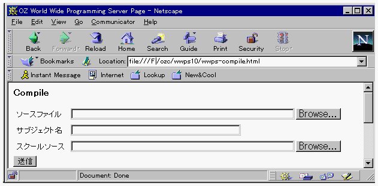
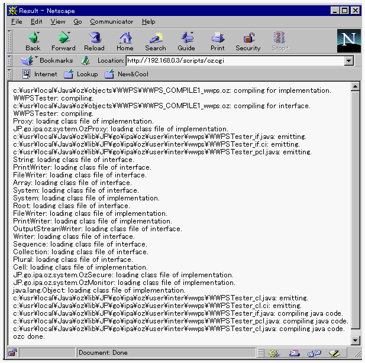

リモートコンパイル
OZクラスのリモートコンパイルを行うことができます。コンパイルを行うと、そのクラスの実行形式ファイルとクラス情報がサーバマシンに格納されます。

- 「HTML文書のカスタマイズ」での設定を行ったwwps-menu.htmlをWWWブラウザで開いて、Compile
ボタンをクリックしてください。

- ソースファイル入力エリアに、OZソースプログラムを絶対パス名で指定します。単一ファイルを指定するときには、
'.oz' を拡張子とするファイルを指定します。 複数ファイルをコンパイルする場合には、ZIP
形式に変換してください。そのZIPファイルをこの入力エリアに指定すると、複数ファイルのコンパイルを行います。
- サブジェクト入力エリアにはサブジェクト名 をキー入力します。この名前はサーバがスクールソースを識別するために使用します。スクールソースと1対1に対応する任意の文字列を指定してください。
- スクールソース入力エリアには、スクールファイル を絶対パス名で指定します。Browse...
ボタンをクリックすると、ファイル選択のダイアログが表示されるので、そこからファイルを選択することもできます。
送信ボタンをクリックすると、WWWサーバと接続され、リモートコンパイルが行われます。
コンパイルが終了すると、WWWブラウザの画面がコンパイルの標準出力を表示する画面に切り替わります（下の図）。
WWPSはスクールソースで指定されたスクールを保持するので、一度指定したスクールは以後サブジェクト名を指定するだけで、コンパイルを行うことができます。

(c) 1996-1998 IPA, ETL, AT21, FSIABC, FXIS,
InArc, MRI, NUL, SBC, Sharp, TEC, TIS. All rights reserved.